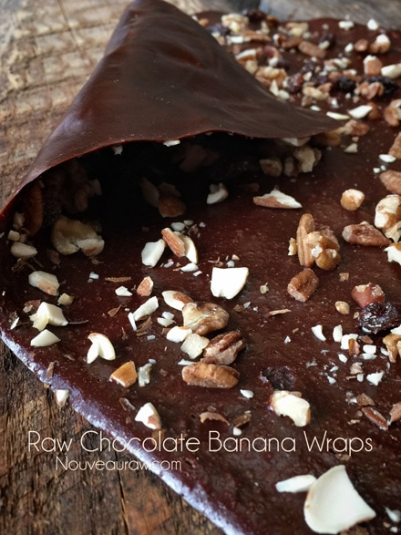
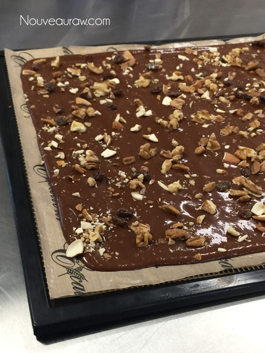
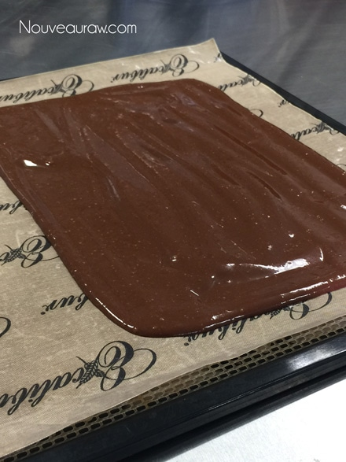

Chocolate Banana Wraps

~ raw, vegan, gluten-free, nut-free ~
Chocolate banana wraps are a great raw food staple to keep on hand. Whether you decide to spruce them up by sprinkling nuts, seeds, chopped dried fruit, coconut, or cacao nibs on top or not… you can enjoy them as a quick snack or a decadent dessert. I referred to them as a “staple” because if properly wrapped, they can last 6-12 months!
You can cut them into strips, creating “fruit wraps” or you can roll them up with about any kind of filling inside. Try nut butters, fresh fruit… Be creative!
When I made these last time, I made some plain and some with almonds sprinkled on them.
Ingredients:
yields 4 cups batter
- 8 ripe bananas
- 1/4 cup ground flax seeds
- 3 Tbsp raw cacao powder
- 1 Tbsp lemon juice
- 1/2 tsp Himalayan pink salt
Preparation:
- In the food processor, fitted with the “S” blade, combine the bananas, flax seeds, cacao powder, lemon juice, and salt. Process until it is nice and creamy.
- Spread 2 cups of batter on the non-stick teflex sheets that come with the dehydrator.
- Be sure to spread it evenly, so it dries evenly.
- Add topping if desired.
- Dehydrate at 145 degrees (F) for 1 hour, then reduce to 115 degrees (F) for about 8 hours.
- Every once in a while check in on it. You know it is done when you can carefully peel the “wrap” off of the teflex sheet.
- If you have any “wet” spots on the backside, flip the wet side up and continue drying for another hour or so.
- To store: lay out a large piece of plastic wrap, lay the chocolate wrap on the plastic, and roll it up, tucking the sides underneath. I then slide it into a ziplock bag, removing as much air as possible.
- Store in a dark cabinet where it is cool.
- Will last roughly a month or so.
The Institute of Culinary Ingredients™
- What is raw cacao powder?
- What is Himalayan pink salt and does it really matter? Click (here) to read more about it.
- Learn how to grind your own flaxseeds for ultimate freshness and nutrition. Click (here).
Culinary Explanations:
- Why do I start the dehydrator at 145 degrees (F)? Click (here) to learn the reason behind this.
- When working with fresh ingredients, it is important to taste test as you build a recipe. Learn why (here).
- Don’t own a dehydrator? Learn how to use your oven (here). I do however truly believe that it is a worthwhile investment. Click (here) to learn what I use.

You can just make it plain as well.
